前言
編輯小語
本期程式人雜誌所介紹的人物以及影片，是沿著「視窗電腦」這個概念的歷史軸線所串起來的， 您可以看到我們從全錄 PARC 研究中心開始，往上追溯到英格巴特的滑鼠與超連結，往下追溯到 賈伯斯 Apple 的 Lisa, MAC, iPhone, iPad 等等，試圖將這一頁的電腦傳奇闡述清楚。
未來我們也將陸續採用這種方式，追溯其他技術的發展，像是「網路 Internet、Web」、 「蕭克萊八大門徒與矽谷的開創」、「台灣電子產業與 IBM PC 之發展」等等， 希望透過這樣的方式逐步將科技史用「文章+影片」的方式，生動的呈現出來。
另外、必須像讀者說抱歉的是，上期我們刊載的 OpenCV 內容與程式，由於程式碼是較舊的 1.0 版， 而作者 Da Wang 最近太忙無法為我們更新版本，因此該系列文章將暫停刊出，等待 Da Wang 兄有空的 時候，再來繼續刊載 OpenCV 系列的文章。
還有關於 Gary Lin 的遊戲程式，可能由於 Gary 太過忙碌，因此沒有上傳新的教學，本期將暫停一次， 等 Gary 上傳新的教學後再繼續。
在本期當中，除了原先的 Arduino, JavaScript, R 統計軟體系列文章之外，我們還加入了 Verilog 硬體描述語言，以及「開放電腦計畫」這兩個系列主題，希望大家會喜歡！
---- （程式人雜誌編輯 - 陳鍾誠）
授權聲明
本雜誌採用 創作共用：姓名標示、相同方式分享 授權，若您想要修改本書產生衍生著作時，至少應該遵守下列授權條件：
- 標示原作者姓名
- 採用 創作共用：姓名標示、相同方式分享 的方式公開衍生著作。
另外、當本雜誌中有文章或素材並非採用 姓名標示、相同方式分享 時，將會在該文章或素材後面標示其授權，此時該文章將以該標示的方式授權釋出，請修改者注意這些授權標示，以避免產生侵權糾紛。
例如有些文章可能不希望被作為「商業性使用」，此時就可能會採用創作共用：姓名標示、非商業性、相同方式分享 的授權，此時您就不應當將該文章用於商業用途上。
最後、懇請勿移除公益捐贈的相關描述，以便讓愛心得以持續散播！
程式人短訊
軟體短訊 – ImageMagick 影像處理工具
ImageMagick 是一個用於查看、編輯、組合或轉換影像的工具軟體集合。它可以讀取超過 100 種影像格式 (包含 GIF, JPEG, PDF, PNG, SVG, TIFF, PDF, Postscript, DPX, EXR, PhotoCD 等)，採用類似 Apache 2.0 的開放原始碼授權方式。
ImageMagick 主要由大量的命令列程序組成，而不是採用 Adobe Photoshop、GIMP 這樣的圖形界面，因此很適合在程式裏被呼叫，是程式人的好幫手！
您可以用 ImageMagic 來「更改圖片大小、鏡射、旋轉、扭曲、變形、轉換影像，或者調整顏色、加上某些特效、 或者將文字、線條、多邊形、橢圓、貝氏曲線等圖形畫在圖片上」。
許多程式語言或平台都提供了 ImageMagick 的 API 函式庫，像是 Ada 的 G2F、C 的 MagickCore, MagickWand、 Ch 的 ChMagick、COM+ 的 ImageMagickObject、C++ 的 Magick++、Java 的 JMagick、Lisp 的 L-Magick、微軟 .NET 的 MagickNet、Pascal 的 PascalMagick、 Perl 的 PerlMagick、PHP 的 MagickWand, IMagick、Python 的 PythonMagick、Ruby 的 RMagick 與 Tcl/TK 的 TclMagick 等。
很多程式使用 ImageMagick 創建縮圖，例如 MediaWiki、phpBB 和 vBulletin 等都是，另外也有不少程式 (如 LyX) 用 ImageMagick 來轉換圖片格式。
在使用者介面上，ImageMagick 也提供了一個基於 X Window 的簡易 GUI：IMDisplay。它還為很多程序語言提供了函式庫。
工具程式集
以下是一些 ImageMagick 的工具程式：
- compare : mathematically and visually annotate the difference between an image and its reconstruction.
- 比較：顯示兩張影像的差異，以便使用者進行影像對比。
- composite : overlap one image over another.
- 組合：將一張影像疊在另一張上面。
- conjure : interpret and execute scripts written in the Magick Scripting Language (MSL).
- 變戲法：執行 MSL 腳本語言。
- convert : convert between image formats as well as resize an image, blur, crop, despeckle, dither, draw on, flip, join, re-sample, and much more.
- 轉換：影像格式轉換，並可作模糊、去斑、更改大小、繪圖、翻轉、剪切、連接、重新取樣等動作。
- identify : describe the format and characteristics of one or more image files.
- 鑑定 ：顯示影像的基本資訊
- mogrify : (覆蓋) resize an image, blur, crop, despeckle, dither, draw on, flip, join, re-sample, and much more. Mogrify overwrites the original image file, whereas, convert writes to a different image file.
- 覆蓋：與轉換 convert 功能類似，但 mogrify 會直接覆蓋在原檔案上 (節省空間)。
- montage : create a composite image by combining several separate images. The images are tiled on the composite image optionally adorned with a border, frame, image name, and more.
- 蒙太奇：
- stream : a lightweight tool to stream one or more pixel components of the image or portion of the image to your choice of storage formats. It writes the pixel components as they are read from the input image a row at a time making stream desirable when working with large images or when you require raw pixel components.
- 串流：
另外還有幾個與 X server 有關的程式如下：
- animate : (動畫) animate an image sequence on any X server.
- display : (顯示) display an image or image sequence on any X server.
- import : (匯入) save any visible window on an X server and outputs it as an image file. You can capture a single window, the entire screen, or any rectangular portion of the screen.
使用範例：
$ convert rose.gif rose.jpg // 將 gif 檔轉為 jpg 格式。
$ convert rose.jpg -sharpen 0x1 reconstruct.jpg
$ compare rose.jpg reconstruct.jpg difference.png
$ compare -compose src rose.jpg reconstruct.jpg difference.pngImageMagick 已經是廣為使用的影像處理工具，甚至有幾本 ImageMagick 的專書，詳細的告訴您如何使用 ImageMagick 呢？列舉如下：
- ImageMagick Tricks: Unleash the power of ImageMagick with this fast, friendly tutorial and tips guide
- The Definitive Guide to ImageMagick (Definitive Guides)
參考文獻
- http://www.imagemagick.org/script/command-line-tools.php
- http://www.imagemagick.org/script/index.php
- http://zh.wikipedia.org/zh-tw/ImageMagick
【本文由陳鍾誠取材並修改自維基百科】
軟體短訊 – mimetex 數學式繪製程式
mimetex 是一個用來將 Tex 數學式轉換為圖片的程式，可以在命令列使用， 但更常被編譯成 cgi 程式，然後用來在 HTML 的 <img src='...'/> 標記中顯示數學式的圖片。
執行範例：
$gcc -DAA mimetex.c gifsave.c -lm -o mimetex.cgi
$gcc -DAA mimetex.c gifsave.c -lm -o mimetex
$mimetex -d "x^2+y^2" > exp.gif網路上除了 mimetex 可以用來顯示數學式之外，還有不少可以在網頁上顯示數學式的軟體，像是 MathJax, jsmath 等，另外 現在的瀏覽器通常也有內建 MathML 的顯示功能。
Google 在其 Chart API 當中也有提供類似 mimetex 的服務，您可以用像下列語法顯示數學式，其中的 etex 是 Tex 數學式編碼為 URL 的字串。
<img src="http://chart.apis.google.com/chart?cht=tx&chl=[tex]"/>參考文獻
- Mimetex 的下載、編譯及用法請參考 -- http://www.forkosh.com/mimetexmanual.html
- PmWiki - 利用 MimeTeX 顯示數學式
【本文由陳鍾誠撰寫】
程式人介紹
全錄 PARC-「視窗、滑鼠、物件導向」背後的英雄人物誕生地
如果要在電腦領域選出一些聖地，那全錄公司 Xerox 的 PARC 研究中心 (Palo Alto Research Center) 肯定是名列前茅，眾多電腦史上的英雄在這個研究中心裏發明了無數神奇的裝置，如果沒有 PARC，電腦的世界肯定不是 現在這個樣子。
到底全錄 PARC 有什麼重要性呢？我們可以從一場官司當中看到一些端倪：
1998 年，蘋果控告微軟，說視窗系統嫖竊了麥金塔電腦圖像顯示技術的「外觀與感覺」，於是「比爾蓋茲」 被傳喚到法庭上答辯說：「事實上他們兩家公司所做出來的視窗系統之所以會有這麼像的感覺，是因為兩者的軟體介面特色都是從全錄 PARC 中心偷來的」！
PARC 故事的開始，也非常的奇特，因為全錄執行長「麥科洛」覺得電腦對影印機事業會有關鍵性的影響， 因此說服了董事會在 1969 年以九億一千八百萬美元的天價併購了科資系統這家電腦公司，為了讓董事會相信 電腦對全錄的重要性，於是在 1970 年成立了 PARC 研究中心。
1970 年，IBM 推出了該公司第一台影印機，切入的全錄的影印機地盤，這點似乎印證了「麥科洛」創立 PARC 是對的。
但是、這個決策對全錄來說，可以說是個錯誤的失敗投資，但是對整個科技產業來說，卻有著難以估計的價值。 如果沒有全錄，就沒有今日的 「視窗介面、物件導向、類似 Word 與 Powerpoint 的所視即所得編輯器、雷射印表機、乙太網路」 等技術。
那麼、到底是哪些英雄在 PARC 裏，他們又發明了哪些東西呢？且讓我們列表如下：
| 技術/產品 | 主要發明人 | 說明 |
|---|---|---|
| Alto 個人電腦 | 由泰勒與撒克 (Charles P. Thacker) 領導 | 其他技術都是這台電腦的衍生產物 |
| 圖形化使用者介面 GUI | David Liddle and Charles Irby | BitBlt 演算法(英格斯), 圖示, 下拉式選單 |
| 物件導向技術 (Smalltalk) | Alan C. Kay, Daniel H. Ingalls(英格斯) | 另外還有 Adele Goldberg, Ted Kaehler 參與 |
| Interpress 印表機頁面描述語言 | John Warnock, Charles Geschke | PostScript (PS) 的前身、後來 PS 又衍生出 PDF |
| 所見即所得排版軟體 | Charles Simonyi, Tim Mott, Larry Tesler | Bravo 與 Gypsy 排版系統 |
| 雷射印表機 | Gary Starkweather (史塔克威瑟) | 事實上，Starkweather 在加入 PARC 之前就發明了雷射印表機 |
| 乙太網路 Ethernet | Bob Metcalfe (梅特卡夫), David Boggs | 網路上著名的梅特卡夫定律，就是這個人說的。 |
圖、全錄的個人電腦 (Alto) 奧圖
對那些曾經從 DOS 跳入 Windows 世代的朋友們，應該可以很容易的看出這些技術之間的關連，因為在當初 Windows 3.1 的時代，我們都從 命令列的 DOS 突然開始使用「滑鼠操控 Windows、用 Word 與 PowerPoint 進行所視即所得的編輯、然後用 Visual Basic 或 Delphi 開始寫物件導向的視窗程式、使用雷射印表機、接著發現可以將印表的內容導到 PostScript 文件中，甚至後來有很多 PDF 輸出程式可以偽裝成印表機 (像是 PDF Creator, PDF 995 等)」。基本上，這些技術幾乎就是視窗技術的全部特徵。
PARC 之所以會發明這些技術，主要原因是他們想要創造出新一代非常人性化方便使用的電腦，後來他們在一台稱為「奧圖」 (Alto) 的電腦上整合實現了這些技術。現在看來，這樣的電腦可以用「視窗型電腦」一句話簡短的描述出來。
因此、「比爾蓋茲」所說的，蘋果的視窗技術事實上是從 PARC 所「偷」來的，所偷的也就是以上這些技術了！
1976 年 4 月 1 日，「賈伯斯」與「沃茲尼克」創建了蘋果 (Apple) 電腦公司，並說服「羅納德‧韋恩」（Ronald Wayne）加入，同年發展出蘋果一號 (Apple I)， 接著在 1977 年 1 月，他們正式註冊登記了『蘋果電腦有限公司』，並在 4 月在首屆的西海岸電腦展覽會（West Coast Computer Fair）首次發表了「蘋果二號」。
「蘋果二號」是開啟個人電腦時代的一台劃時代家用電腦，成功的讓電腦從商業領域進入家庭領域，從此「賈伯斯」成為了美國電腦界最年輕的科技金童。
1979 年、全錄邀請「賈伯斯」談一筆交易，希望能投資蘋果電腦公司。「賈伯斯」知道全錄非常想要這些股份，於是開出了一個交換條件，要求要參觀 PARC 觀看技術展示並 聽取簡報，他就願意讓全錄以每股 10.50 美元認購十萬股蘋果股票。
於是、「賈伯斯」如願的進入了全錄 PARC 研究中心，並在全錄看到了 Alto 電腦、滑鼠、Bravo 所視即所得排版軟體、以及一些用 Smalltalk 寫成的繪圖軟體。
事實上、「賈伯斯」早在參觀全錄之前就在 Apple 內部組織了一個小組，全力開發下一代的 Lisa 電腦，這台 Lisa 電腦基本上也就是蘋果公司的視窗電腦，但是 仍然有些觀念與技術上的瓶頸。因此、對於視窗電腦這個尚未完全公開的概念而言，賈伯斯與蘋果團隊顯然不是外行人，他們在進入 PARC 之前已經 讀過 PARC 出版的每一篇論文了。
在全錄 PARC ，「賈伯斯」看到了突破這些瓶頸的關鍵，於是在第一次展示兩天後，「賈伯斯」帶著蘋果的技術人員再度回到 PARC，要求看第二次展示。「賈伯斯」 強硬的要求全錄必須展視更多的關鍵技術，這項要求直達全錄最高層，於是 PARC 的內部人員決定展示 Smalltalk 這項關鍵技術。
懂得視窗程式的設計人員必然知道：「如果說視窗介面是表皮，那麼物件導向技術就是她的骨骼」。當 PARC 展示物件導向技術給「賈伯斯」團隊看的時候， 「賈伯斯」大叫著：「這家公司擁有這麼好的技術，為甚麼沒有把它推出到市場上？這裏到底發生了什麼事？我完全搞不懂！」。而一旁的蘋果團隊，則是 聚精會神的不斷吸收著 PARC 十年來的技術成果，在幾小時的展示內想辦法完全理解其技術內容。
ARC 所創造過的輪子， 例如蘋果的「艾金森」為了解決視窗重疊部分的問題，就重新發明了一個方法解決了「英格斯」用 BitBlt 方法所解決的問題。
後來、「賈伯斯」希望向全錄授權使用 Smalltalk 技術，沒想到全錄卻擺出高姿態拒絕 (因為全錄那時已經將蘋果股票全部賣出)，這也導致 後來蘋果並沒有採用 Smalltalk，而是改以 Objective-C 為主要語言。
所以，如果沒有 PARC 的話，也很可能不會有蘋果的 MAC 與微軟的視窗系統，「賈伯斯」很可能不會創立蘋果、更不會固執的傾全力投入到 「視窗電腦」的開發上，也不會花太多金錢與時間在「視窗電腦」的設計上，後來卻賣不出去而種下了被 Apple 開除的命運，然後也就沒有後續 又回到蘋果公司掌權的絕地大反攻過程，也可能就沒有後來的 iPod, iPhone, iPad, ......
(這樣推論好像有點太過頭了，不過也是有可能的 ....)
事實上、全錄並非沒有推出視窗電腦的產品，1982 年時全錄曾經推出「全錄之星」 (Xerox Star) 就是正式推出的商用視窗電腦，但成本與價格過高，基本款就要七萬五千美元，銷售量慘不忍睹。
| 影片年份 | 長度 | 網址 | 說明 |
|---|---|---|---|
| 未知 | 01分01秒 | http://youtu.be/M0zgj2p7Ww4 | 奧圖 Alto 電腦的展示性廣告 |
| 1982 | 08分42秒 | http://youtu.be/Cn4vC80Pv6Q | 全錄之星 Xerox Star 影片第一集 |
| 1982 | 08分01秒 | http://youtu.be/ODZBL80JPqw | 全錄之星 Xerox Star 影片第二集 |
賈伯斯與 PARC 之間的關係，還不只這樣，另一層關係是透過皮克斯 (Pixer) 連上的，這個故事也很精彩！且聽我們慢慢道來：
Alvy Ray Smith 原本是紐約大學的電腦教授，卻放棄了教職去追尋藝術零感，他和 PARC 的 Richard Shoup 是好朋友，因而在 1974 年來到 PARC。 當他進入 PARC 看到 SuperPaint 這台機器後，就對它一見鍾情，想要應徵進入 PARC 使用這台機器。但是 PARC 的人事部門卻拒絕了這項請求！
後來 Alan Kay 想到一個辦法，就是讓 Smith 以「家具」的身分進入 PARC，因為 PARC 用名義上為「家具」的支出，購買了 Smith 的「服務」。
Smith 說：「我不在乎他們怎麼做，我只要能摸到 SuperPaint 就行了」，於是 Smith 成了 PARC 的「家具」。
後來 Alvy Ray Smith 和 Richard Shoup 在 PARC 過得並不愉快，受到冷落與排擠，於是 Smith 離開去紐約計術學院找 Ed Catmull，後來兩人一起 投效星際大戰的「喬治盧卡斯影業」，成了該公司動畫部門的創始人，後來在整個部門快被裁掉之前，他們找到了賈伯斯，賈伯斯投資了 1000 萬美元， 讓皮克斯從「喬治盧卡斯影業」獨立出來，並成為皮克斯的最大股東，因而接收了 Smith 這個家具與他的朋友們！
參考文獻
- http://en.wikipedia.org/wiki/PARC_(company)
- http://en.wikipedia.org/wiki/History_of_the_graphical_user_interface
- 創新未酬, Dealers of Lightning, 作者：西爾吉克, 譯者：洪裕翔, 出版社：天下文化
補充
- 電腦領域還有另外幾個聖地，像是 AT&T 的 Bell Lab、IBM 研究中心與蕭克萊的仙童半導體 (Fairchild Semiconductor) 等等。
- 1983 年 Alvy Ray Smith 與 Richard Shoup 獲得了技術類的艾美獎，以表彰兩人與 SuperPaint 機器在動畫技術史上的地位。
【本文由陳鍾誠取材並修改自維基百科】
Alan Kay-創造物件導向技術的關鍵人物

圖、Alan Curtis Kay
Alan Curtis Kay 出生於 1940 年 5 月 17 日，他從 1968 年秋天與 Seymour Papert 認識並開始學習 Logo 語言之後， 就迷上了這種易學意用風格的程式編碼方式。於是、創造出一種易用、直覺又強大的程式語言，就成了他終身的職志。
Alan Kay 一直想創造出一種稱為 Dynabook 的軟體系統，並且因此而創造出了 Smalltalk 這個語言，Smalltalk 後來被 公認為物件導向語言的始祖，也是最純粹的物件導向語言。
事實上、第一版的 Smalltalk 是在 1971 年由 Alan 提出規劃，並由 PARC 的同事「英格斯」(Ingalls) 花了幾個早上寫程式實作出來的， 這個版本稱為 Smalltalk-71，其設計理念深受 Simula 語言當中訊息傳遞機制 (message passing) 的啟發。後來在 Smalltalk-72 當中又加入了 Actor Model 這個慨念。接著在 Smalltalk 76 當中加入了類似 Simula 的繼承概念，然後在 Smalltalk-80 當中加入了 元類別 (metaclasses) 這個概念，讓所有型態通通物件化了，Smalltalk-80 是真正成熟並廣為使用的版本。
Alan Kay 是 PARC 研究中心成立時第一位聘用的研究人員，他創立學習研究工作組（LRC），並參與 Alto 電腦的開發。
Alan Kay 於 1983年離開全錄，進入 Atari 公司擔任首席科學家兼副總裁。然後在 1984 年改加入蘋果的 ATG ( Advanced Technology Group )。 然後在 1996年，又再度離開，改加入了迪斯尼公司，任 Imagineering 公司的副總裁，開發 Squeak 軟體，後來又投入 Etoys 系統的研究。
2001 年 6 月，Alan Kay 離開迪斯尼，創辦 Viewpoints Research Institute，致力於為「兒童，學習，和先進的軟體開發」。2002 年成為 HP 惠普公司院士， 2005 年 HP 解散了 Advanced Software Research Team，於是該職務又中斷了，但 Alan Kay 仍然是 Viewpoints Research Institute 的領導人。
由於 Alan Kay 在物件導向與 Smalltalk 上的成就，ACM 組織在 2003 年決定將資訊科學領域的最高榮譽「圖靈獎」頒贈給他， 以表彰 Alan Kay 在資訊領域的傑出貢獻！
參考文獻
- http://en.wikipedia.org/wiki/Alan_Kay
- http://en.wikipedia.org/wiki/Smalltalk
- http://en.wikipedia.org/wiki/Dynabook
- http://en.wikipedia.org/wiki/Message_passing
- http://en.wikipedia.org/wiki/Actor_model
- http://en.wikipedia.org/wiki/PARC_(company)
- 創新未酬, Dealers of Lightning, 作者：西爾吉克, 譯者：洪裕翔, 出版社：天下文化
【本文由陳鍾誠取材並修改自維基百科】
Douglas Engelbart - 滑鼠背後的那個人
雖說 PARC 幾乎發明了視窗系統的大部分技術，但是如果少掉了不屬於 PARC 的「英格巴特」 (Douglas Englebart)， 那整個故事就有了缺憾！

圖、Douglas Engelbart in 2008
英格巴特除了發明了滑鼠，而被稱為 The man behind the mouse 之外，他們還開發了超連結文字系統 (Hypertext System)、 而且他還是 Internet 前身 ARPANet 發明的關鍵人物。

圖、由 Bill English 根據 Engelbart 手繪稿實作出的滑鼠原型
英格巴特深受 Vannevar Bush 1945 年出版的 As We May Think 這篇文章的啟發，立志用電腦來讓世界變得更好，從 加州柏克萊大學電子工程系畢業後，在 1953 年取得碩士學位，然後在 1955 年取得博士學位。
1957 年英格巴特進入了 Stanford Research Institute (SRI) 這個研究機構，先是為 Hewitt Crane 作電磁裝置研究，後來 因為 Augmenting Human Intellect: A Conceptual Framework 這篇文章受到國防部先進研究中心 DARPA 的重視，讓他成立了 Augmentation Research Center (ARC) 這個實驗室，後來他致立於 oN-Line System (NLS) 這個系統的研究，因而發展出了 位元映射螢幕 (Bitmapped Screen)，滑鼠 (Mouse)、超文字系統 (Hypertext) 等，這也導致後來全錄 PARC 的人受到啟發， 並且透過原本就任職 DARPA 且資助 Engelbart 的泰勒讓全錄繼續資助他的計劃，因此 Engelbart 與全錄 PARC 的關係也可說 是密不可分的。
英格巴特在 1968 年在 Fall Joint Computer Conference 作了一場驚人的展示，整場展示總共有 100 分鐘，您可以從以下網址 看到這場展示的完整內容：
- Doug Engelbart 1968 Demo -- http://sloan.stanford.edu/mousesite/1968Demo.html
以下是 SRI 所上傳的重要節錄影片，筆者對每一段都加上簡短的說明，以方便讀者快速觀看。
| 節錄段落 | 長度 | 網址 | 說明 |
|---|---|---|---|
| 1 | 00分39秒 | http://youtu.be/VScVgXM7lQQ | Engelbart 說明要以展示為主，包含立即互動式的文件編輯與視訊會議 |
| 2 | 06分25秒 | http://youtu.be/Xptc6f3Daoo | Engelbart 展示如何用滑鼠簡貼、選取功能表項目、用滑鼠點閱圖形等功能 |
| 3 | 01分31秒 | http://youtu.be/agdPQuFr0yg | Engelbart 說明目前的編輯功能限制，並邀請人們進行技術的改進 |
| 4 | 01分42秒 | http://youtu.be/hRYnloqYKGY | 控制部分：展示實際操作的「鍵盤、滑鼠、與現場編輯狀況的對應 |
| 5 | 01分58秒 | http://youtu.be/OA0ppjh3Or4 | 硬體部分：講解該電腦結構與設計的原理 |
| 6 | 03分44秒 | http://youtu.be/qisaqiysp2s | 軟體部分：Jeff 出現講解軟體，並與 Engelbart 進行現上會議交談。 |
| 7 | 01分30秒 | http://youtu.be/u36O0z7rm9M | 利用滑鼠與鍵盤進行檔案選取、編輯、修改等管理動作。 |
| 8 | 02分59秒 | http://youtu.be/qI8r8D46JOY | 即時合作：Engelbart 與夥伴展示如何合作共同編輯互動等技術 |
| 9 | 02分04秒 | http://youtu.be/eB7YtQTtxn0 | 期他計畫：特別是關於 ARPANet 網路等計畫的說明。 |
| 10 | 02分03秒 | http://youtu.be/61nL6utq91Q | 團隊介紹：特別是關於 ARPANet 網路等計畫的說明。 |
在這場展示中，他們所展示的正是 oN-Line System (NLS) 這個系統，整個系統包含「滑鼠、超文字、網路、互動視訊會議」， 整場 100 分鐘完整的展示目前都還完整的被保留下來，堪稱完美的科技歷史記錄。
參考文獻
- http://en.wikipedia.org/wiki/As_We_May_Think
- http://en.wikipedia.org/wiki/PARC_(company)
- http://en.wikipedia.org/wiki/The_Mother_of_All_Demos
- Augmenting Human Intellect: A Conceptual Framework, By Douglas C. Engelbart, October 1962
- Doug Engelbart 1968 Demo -- http://sloan.stanford.edu/mousesite/1968Demo.html
- 創新未酬, Dealers of Lightning, 作者：西爾吉克, 譯者：洪裕翔, 出版社：天下文化
【本文由陳鍾誠取材並修改自維基百科】
程式人頻道
看影片感受賈伯斯的一生
2011 年賈伯斯死後，很多人都買了以下的這本賈伯斯傳來看，
書中這麼長的文字敘述，我始終看不下去。但是在我的腦海中，賈伯斯的慨念似乎非常的清晰，這些概念來自於一些關於賈伯斯的傳說， 以及我個人看過的書籍！
於是在賈伯斯死後，我蒐集了一些網路上關於賈伯斯的影片，企圖用影片拼湊出賈伯斯的一生！
但是、在看這些影片之前，先讓我們用「年表」的方式，回顧一下賈伯斯傳奇的人生！
賈伯斯年表
| 年份 事 | 件 |
|---|---|
| 1955 | 賈伯斯出生 |
| 1974 | 賈伯斯與 Daniel Kottke 到印度找 Neem Karoli Baba 進行靈修之旅，回到加州後，與 Wozniak 經常開會，然後賈伯斯找到了一份在 Atari 遊戲機公司的工作 |
| 1976 | 賈伯斯與 Steve Wozniak 和 Ronald Wayne 成立了蘋果公司，並創造了 Apple I 電腦 |
| 1977 | 蘋果公司創造出 Apple II 電腦大賣，成為電腦界的超級新星 |
| 1978 | 蘋果公司找來 Mike Scott 擔任 CEO |
| 1979 | 賈伯斯進入全錄 PARC 研究中心，試圖拼湊出視窗技術的全貌 |
| 1981 | IBM 釋出 PC 架構，搶奪了原本屬於蘋果的個人電腦市場 |
| 1983 | 蘋果公司找來百事可樂的 John Sculley 擔任 CEO |
| 1985 | 賈伯斯因為麥金塔銷售不好而被蘋果開除，進而成立了 NeXT 電腦公司 |
| 1986 | 賈伯斯以 $1000 萬美元買下從盧卡斯影業買下了繪圖部門，這家公司就是後來的皮克斯 (Pixar) |
| 1987 | 賈伯斯資金用盡，但是卻得到富商裴洛 (Ross Perot) 的投資 |
| 1990 | NeXT 工作站上市，售價 $9999 美元，銷售情況令人失望，之後不久推出下一代的 NeXTcube |
| 1991 | 3 月 18 日，賈伯斯與 Laurene Powell 結婚 |
| 1993 | NeXT 總共只賣出 50000 台，賈伯斯決定將 NeXT 轉型為軟體公司 |
| 1994 | NeXT 終於轉虧為盈，獲利美金 103 萬元 |
| 1996 | NeXT 釋出 WebObjects 網路架構軟體， WebObjects 後來成為 Apple Store, MobileMe services 與 iTunes Store 的基礎架構。接著Apple 用 4290 萬美元買下 NeXT |
| 1997 | 賈伯斯再度成為蘋果的代理執行長 |
| 2000 | 賈伯斯正式承認自己為正式的蘋果執行長 |
| 2001 | 11 月 23 日, iPod 正式亮相，開啟了數位音樂與掌上型裝置的新時代 |
| 2003 | 4 月 29 日，iTunes Store 網路音樂商場現身，音樂市場從此改變 |
| 2007 | 6 月 29 日，iPhone 手機誕生，手機市場開始進入蘋果主導的時代 |
| 2010 | 4 月，蘋果發表 iPad 平板電腦，再度革新了整個電腦市場 |
| 2011 | 8 月，賈伯斯卸下蘋果執行長職務，10 月 5 日，賈伯斯因病死於家中，畫下其傳奇一生的據點。 |
在以上的年表當中，有幾個令人稱道的傳奇故事，列舉如下：
- 「賈伯斯與沃茲尼克」在自家車庫創立了蘋果公司，創造出「蘋果一號與二號」成為科技金童，並帶領世界進入「個人電腦時代」。
- 「賈伯斯」為了邀請百事可樂的「史考利」擔任蘋果公司的 CEO，於是問他：「你想一輩子賣糖水，還是得到一個改變世界的機會」。於是史考利加入了蘋果，而且在 1985 年稅服董事會將賈伯斯開除。
- 全錄想要認購蘋果的股票，「賈伯斯」開出條件要進入全錄 PARC 研究中心聽取視窗技術報告，這讓原本就在研發 Lisa 電腦的賈伯斯更加全力投入視窗電腦的開發。但是後來 Lisa 的銷售失敗，也導致賈伯斯落入被開除的命運。
- 「賈伯斯」被開除之後，又創立了 NeXT 電腦公司，而原本就持有大量股份的皮克斯 (Pixer) 公司發展得很好，這兩件事讓賈伯斯在 10 年後得以返回蘋果再度當 CEO。
- 「賈伯斯」回到蘋果之後，2001 年透過 iPod 建立了第一個攤頭堡，然後就像變戲法一般，從 2007 年的 iPhone, 2010 年的 iPad 到 2011 年的 iCloud，讓蘋果超越微軟 與 Google，成為了科技業的霸主！
賈伯斯影片集
從以下的影片當中，您可以拼湊出上這些傳奇故事的發展脈絡，
| 影片年份 | 長度 | 網址 | 說明 |
|---|---|---|---|
| 1964 | 09分09秒 | http://youtu.be/BlUWg2nxCz0 | 打孔卡的時代 IBM: Once Upon A Punched Card |
| 1964 | 00分45秒 | http://youtu.be/ZGRCn0vwK3c | IBM 360 主機介紹 |
| 1964 | 03分11秒 | http://youtu.be/lpkqdbz1R_s | 第一台商用個人電腦 Programmer 101 的介紹 |
| 未知 | 03分40秒 | http://youtu.be/2_iNKWO3RXY | Apple II 電腦介紹 (第一台成功打入家庭市場的個人電腦) |
| 未知 | 19分05秒 | http://youtu.be/7YgrLL2Av40 | IBM PC 個人電腦介紹 |
| 1982 | 08分42秒 | http://youtu.be/Cn4vC80Pv6Q | 全錄之星 Xerox Star 影片第一集 |
| 1982 | 08分01秒 | http://youtu.be/ODZBL80JPqw | 全錄之星 Xerox Star 影片第二集 |
| 1983 | 03分08秒 | http://youtu.be/NVtxEA7AEHg | 蘋果產品發表大會，意氣風發的青年賈伯斯，蓋茲當時還是藍色 T 恤的青澀小老弟 |
| 1984 | 10分00秒 | http://youtu.be/RcRQWGFJ5YY | 賈伯斯介紹 Macintosh 電腦 |
| 1984 | 08分45秒 | http://youtu.be/sIvtXDCP2CE | 電視專訪渥茲尼克 |
| 未知 | 01分11秒 | http://youtu.be/wdrKWArr3XY | 賈伯思如何從全錄得到視窗相關概念與技術的？ |
| 未知 | 00分47秒 | http://youtu.be/S_JYy_0XUe8 | 史考利回憶賈伯斯邀請他入蘋果的過程 |
| 未知 | 04分06秒 | http://youtu.be/nK7TQVFSA1Y | 賈伯斯被開除後的專訪，說到與 PARC、GUI 與被開除的事情。 |
| 未知 | 01分43秒 | http://youtu.be/zkTf0LmDqKI | 賈伯斯說只要勇敢開口並行動，很少會被直接拒絕的！ |
| 未知 | 08分53秒 | http://youtu.be/CGciAnjEf0g | 賈伯斯專訪，包含歷史回顧短片 |
| 未知 | 01分04秒 | http://youtu.be/qNmio51UX-w | 賈伯斯與皮克斯動畫 |
| 1992 | 06分17秒 | http://youtu.be/pQaqDQx3Lo8 | 賈伯斯親自介紹 NeXT 電腦，以及後來介紹 iMAC OS X 的對比 |
| 1993 | 20分46秒 | http://youtu.be/WHsHKzYOV2E | 創立 NeXT 電腦公司的賈伯斯 |
| 1996 | 04分32秒 | http://youtu.be/SaJp66ArJVI | 賈伯斯重回蘋果之前的一個專訪 |
| 1997 | 71分10秒 | http://youtu.be/GnO7D5UaDig | 蘋果 1997 年 WWDC 大會，賈伯斯幾乎從頭主持到尾 |
| 2001 | 50分11秒 | http://youtu.be/Mc_FiHTITHE | 賈伯斯發表 iPod |
| 2005 | 15分10秒 | http://youtu.be/Ip0hG7FXVgs | 賈伯斯於史丹佛大學畢業典禮，講自己的三個故事 (出生、被開除、瀕死經驗) |
| 2007 | 13分27秒 | http://youtu.be/hHB9O6ByXTQ | 賈伯斯發表 iPhone |
| 2010 | 06分00秒 | http://youtu.be/OBhYxj2SvRI | 賈伯斯發表 iPad |
| 2011 | 07分38秒 | http://youtu.be/O_C1TZIT-qQ | 賈伯斯發表 iCloud |
| 2011 | 03分04秒 | http://youtu.be/qL1OsHZ-hXc | 得知賈伯斯死訊，渥茲尼克悼念並談到賈伯斯 |
我的感想
雖然賈伯斯是個好強到近乎自大的人，這點從他的「現實扭曲力場」 (Reality Distortion Field) 這句話就可以清楚的感受到， 但是他卻是個擁有強烈自信、失敗後還能再度站起來、而且具有實現夢想能力的人，正是這些特色形塑了他的人格魅力，這種魅力 讓我們寫出以下感言：
- 電腦世界沒有了賈伯斯，就像是三國演義沒有了諸葛孔明，再也精采不起來了。
- 歷史證明了一件事，沒有了賈伯斯的蘋果，是不紅且沒有味道的。
- 世界並不會因為少了一個人而無法運作，但卻會因此而喪失一些色彩。
參考文獻
- http://en.wikipedia.org/wiki/Xerox_Star
- http://en.wikipedia.org/wiki/steve_jobs
- http://en.wikipedia.org/wiki/John_Sculley
【本文由陳鍾誠撰寫】
看影片學用 TinyCAD 畫電路圖
畫圖的軟體有很多，但是好用的畫電路圖的軟體感覺就不太多了，特別是開放原始碼的軟體，就更少了！
TinyCAD 是我所用過最好用的電路圖軟體 (可惜好像只有支援 MS Windows 平台)，在本文中，我們將用實際的錄影， 示範如何用 TinyCAD 建構出以下的全加器的電路圖：

使用 TinyCAD 畫全加器電路圖
如果讀者想要照著操作，首先請到下列網址下載 TinyCAD 並且安裝到電腦上，然後就可以一邊看影片一邊學習如何操作了：
以下影片是筆者的操作過程：
【本文由陳鍾誠撰寫】
程式人討論區
程式教育討論 – 資工本科生與外系半路出家的程式人之比較
筆者在自己的 facebook 上的一個感想引發了討論：
我一直有個看法，或許可以說是偏見：
我們這些台灣的「資訊工程系」其實培養不出好的程式人才，反倒是哪些「哲學系、社會系、數學系、歷史系」等等科系，他們的學生出來之後，如果敢來應徵「程式類職務」的，通常都很強！
大學的資工系感覺已經成了一種反向的指標，因為這個群體的良率太差，比起那些「外系的程式人才」而言，實在差得太多了！
原始討論： https://www.facebook.com/ccckmit/posts/10151589136376893
回應摘錄：
- D○○ : 資工教的是技術？或者是思維？
- 葉○○ : 一切還是與自身的努力有關
- 陳鍾誠 : 資工系的一個班，程式好的大概只有 5 個，有時候更少！所以良率低於 10%。但是那些「外系來應徵程式類職務的」，幾乎個個都有兩把刷子。良率通常高達 80% 以上！
- L○○ : 這個問題, 20年前我們資工系上課的第一天, 系主任就說了: 資工系不是訓練 coding slave 的地方, 資工系是要培養創造程式語言的人才.
- 鄭○○ : 我覺得可能就教育訓練出的底子吧。像數學系對邏輯和如何把問題拆解成可解的步驟，要求非常高...
- 陳鍾誠：但是有多少程式語言是資工人，或者是大學內創造的呢？這種理由我很難接受，連程式都寫不好的人「狂妄的宣稱」自己在創造程式語言，我覺得「系主任似乎在找理由，不是在找方法」！我無法接受這種藉口！
- 鄭○○ : 那時候我們系跑去上資科系的課，普遍的感想也都是為何別系的同學腦袋好像都是混亂的.....(沒有攻擊的意思）
- R○○ : 鍾誠, 我們班呢？也符合這個良率原則（低於 10%）嗎？
- 陳鍾誠：關於這點，我只能說自己在良率的邊緣徘徊，算是次級品吧！
- L○○ : 哈, 20年來培養出的人才大概是0吧. 大家根本就在追求最新的程式語言, 一直學一直學
- 莊○○ : 在森林中的人，看不見森林的全貌，只曉得沿著既定的林徑一直走。但是在森林外的人，卻可以看到整片森林的面貌，而選擇自己的路徑。
- 陳鍾誠 : 說資工教思維，這有點自誇！我覺得當教育越來越高調的說我們必需要教學生創意的時候，那個國家就完蛋了！因為、創意是無法教的，特別是大學老師本身就是特別沒創意的人，才會來當老師阿！
- 吳○○ : 樓上老師好(被巴頭) 不過我個人認為，有好的老師引入門，學習才是真的事半功倍
- 宋○○ : 教育是否有問題？？為何學生選擇不適合自己的科系？為何學生選擇無法投入熱情的專業？為何大學體系教學內容總是理論，而少有應用面？為何念了資工系不懂得甚麼叫獨立思考？ 也許這是很多不同專業之間的通病。
- 陳○○ : 適合寫程式的人，進入其它系的機率跟進入資工系的機率一樣，也許資工系根本沒有意義，同樣的課程放到哲學、數學、電機等學系去，一樣都會是10%
- 陳鍾誠: 事實上，好的老師只能節省你摸索的時間，帶你快速進入情況！但是對於沒有學習動機的同學，不管老師多好都於事無補！
- 陳○○ : 真的是有好的老師帶摸索時間會節省很多，目前進到的企業大部分都有SOP，事實上很多人以為做了SOP，新人就一定看得懂...不用人去教，上次我有某個前輩就直接說 『叫你看SOP，跟丟給你一本數學課本，看了你真的就全懂了嗎...』
- G○○ : 哲學系的學生 學哲學的良率也低於10%~
- G○○ : 中文系的學生 中文很強的良率也相當之低.....
- 林○○ : 你可以調查一下大一進來的學生為什麼要選資訊系，恐怕有不少人會答 “因為不會電腦，想學點電腦”，如果再進一步追問， 想學的東西不包括寫程式在內。另一批人可能想玩電玩，中部許多資工系都改多遊系了， 可是多遊系也教不起太基礎的程式，用Shiva3D這種引擎的都算不錯了
- 吳○○ : 這個郭董看到會震怒wwwwww [什麼?!良率這麼低?!]
- G○○ : 所以有問題的大概是篩選制度.....沒辦法把想讀的人放到想讀的系去還君明珠雙淚垂，恨不相逢未嫁時
- 林○○ : 問題是18歲時知道多少事情，那時的興趣通常只是好玩而己
- 李○○ : 應該這樣說，在科系這個學習環境下，大半都被領域的框架給限制住了，我覺得這造成腦袋變得僵化，但其實不管什麼領域，其實都是很靈活的知識。這樣想想，我們是不是都對本科以外的事情有更多學習動機，甚至更了解？比如說運動、遊戲之類的......所以根本問題還是要從教育，和讓中學生在選擇志向時，能夠對他所選擇的項目有清楚明白的了解。
- 洪○○ : 你們想太多了拉，正常而言 資工系的人(我的感覺比較像是工具)--缺乏創造的概念，但是 別科系的人 會再進入資工領域(基本上那些人是對這個有興趣的---他們想要解決某些問題所以必須學習工具---自然比較有學習動機)---當一個真正想學的人 怎麼可能良率不好(鐘誠兄 你想得太簡單了一點)---所以 解決之道 是要讓他們自己想出 他們想要解決的問題後--自然良率就會增加了
- 陳鍾誠：如果這個現象是通則，而不是只有在資工系，那 ....................................
- ...
- C○○ : 哈哈哈~個人認為...程式設計是現在各行各業都需要有人懂得技術。其實重點是在資訊的設計，不是在程式本身。
- 陳鍾誠：如果學以致用的人是 50%，那我們可以說另外 50% 他們去探索自己的興趣了！但如果是 10%，那我們能怎麼說呢？ ...............................
- 陳鍾誠：雖然「九把刀」說：大學不是人力資原產生器，但是當大學與人力資源無關，或者成了反指標時，為何上大學這件事情我就無法解釋了！
- 陳鍾誠：「7.69分上大學，又怎樣？」 /九把刀 -- http://www.wretch.cc/blog/Giddens/7146131
- 陳鍾誠：大學是探索人生的時期，我想這沒什麼不好，但是如果浪費了光陰，或者養成了懶散的習性，那就不太好了！
- 陳鍾誠：如果大學科系的入學門檻不是分數，而是「對該科系的學習熱情與動力」，那我想這個現象會好得多！
- 陳鍾誠：不過這個東西一但指標化，成了 KPI, 那就會有一堆補習班開始補「如何營造對學習熱情與動力的假象」，這恐怕會更糟！
- 林○○ : 上次我的母系的系友會有去參加, 這次的正在安排時間 http://zoology.tw/2013/index.php?content=list.php 在那邊, 乾脆把畢業後跨領域當成常態, 其實各系也應該差不多, 資訊系的人到了別的領域, 如果能引領那個領域的人利用資通訊的科技而有所進步, 其實貢獻就比我大得多了, 只是如果未來之路不可知的前提下,那我們要教些什麼呢? (現在的課程其實都是假設學生就是要鑽研一輩子的假設下設計的, 可是當前提為FALSE時, 所有的都是FALSE了)
- 詹○○ : 我認為這不是資工系跟非資工系的問題，這跟我們的教育制度和家長的觀念有很大的關係，因為我們不知道我們的興趣在哪裡，在成長的過程中沒人讓我們探索，上課 考試 上課 考試......
- 陳鍾誠：但資訊領域的人要能「引領其他領域的人運用資訊科技」，本身至少要資訊領域的能力夠才行！如果本科能力都不夠，那就只能期待「哲學領域的人來引領其他人進入資訊領域」，這樣感覺怪怪的！
- Т○○ : 為何不反過來看,這些非資工人才在他們自己的領域 ex.哲學 是不是表現也很好?其實應該是熱情的問題,或許有天分之差,但普通人應該比較多數!
- 陳鍾誠 如果面對 12 年國教大家可以在「如何探索自我的天份與興趣」上下功夫，而不是只在「超額比序」上做文章，那應該比較好一些吧！
- ...
- 吳○○ : 我覺得程式是需要時間練的。但是念理工科的，除非對程式相當有興趣，不然光是念其他科目就焦頭爛耳了哪來時間練程式(頂多就練到上機考能寫個及格，但是上機考能出道多難，能寫到多大?)。三電一工(電路電子電磁工程數學)擠在同一個學期，還有微分方程、機率、資工的計組、OS(也只是看懂，真的會去寫?)組合語言(看懂就要點時間了)?，而且理工學院老師標達能力非常好可以在課堂上就當場全懂得幾乎沒有(根本都是回家自己翻原文書念)。而且又不斷地在考試。理科跟文科很大不一樣就是有正確答案，沒寫對就沒分數。相較之下文科能挪用的空閒就比較多，而且文科老師表達能力大多較好。台清交成中字輩學校資工系其實coding滿強的(基本上畢業也確實幾乎都從事本業)，但念文科的真的走程式類職務比例有多少呢?會去走的，當然有相當能力。那剩下不會的根本就連碰都不想碰吧(連重灌電腦都有問題)，資工系就算寫不出程式，至少還看得懂演算法吧。所以，考慮到其他因素我覺得這種講法非常不公平。每個系上一定都有對自己本系不感興趣且擺爛的學生，不能以偏概全。至少，我當程設助教我改上機考，我覺得我的學生都有基本的能力。
- 楊○○ :現在的學生可能也沒辦法想自己適合什麼科目吧....
- 楊○○ :在想人生目標之前，就被考試填滿了
- 林○○ :「哲學領域的人來引領其他人進入資訊領域」, 突然想到, 做現在各校多遊系教學重要工具iClone的人(甲尚的老闆)就是台大哲學系畢業的......
- L○○ :無論學生、老師、系所，甚至學校，也都只能不斷在謀生/熱情/理論/實作這些維度中，摸索適合自己的定位。學校能做的，或許是規劃出許多較短的學程，幫助學生選擇。CMU CS 的大學部似乎是規定每個人都要有輔系，系上畢業典禮會當作個人成就一一宣布出來，我覺得蠻有道理的。
- 陳鍾誠 我覺得樓上 吳○○ 的說法很有意思，特別是「頂多就練到上機考能寫個及格，但是上機考能出道多難，能寫到多大?」這句話！一語道破了「資工系學生」與「外系半路出家」學生在心態上的差別。 一個是為了應付考試而寫，另一個是因為喜歡而寫，這個差別可以說是非常關鍵性的一點，勝負完全取決於心態！
- 陳鍾誠：分享 Xdite Cheng 的一篇舊文：給尚未大學畢業的朋友的幾個人生建議
- 陳鍾誠：再分享一篇 給尚未大學畢業的朋友的幾個人生建議 - 能力培養篇
- ...
- 陳鍾誠：另外、我對 吳○○ 所說的部分特別感興趣，其實我們是在反省自己的問題，而不是檢討學生！為何我們資工系培養不出真正好的「程式人才」，如果作業系統、計算機結構只能講講理論，那是否每個人都應該修。難道作業系統、計算機結構不能也加入實作嗎？在計算機結構課程讓每位學生設計出自己的 CPU 行不行，在作業系統課程讓每位學生寫一個自己的 OS 行不行！ 一定要用考試來考核嗎？如果考試對學生沒有幫助可以採用別的方法嗎？
- 陳鍾誠 對學生而言，大家都應該強制修微分方程、機率、線代、等課程嗎？
- 陳鍾誠 台清交成中字輩的學生或許會比較強一點，但之前我們也看到中央資工老師不斷發出「現在的台清交成中很多學生在 3 年級開始就在準備考研究所，然後真正的資工訓練事實上只到了三上就結束了」，於是中央軟工所決定不用考試來錄取學生！
- 陳鍾誠 排名前面的學校遇到的問題與排名較後面的學校也很不同！排名後面的學校比較普遍的是動機與興趣問題！
- 林○○ : 對於要在這一行繼續混的人來說, 基礎課程還是得教, 雖然知道他們也是死K而已, 但一旦工作上遇到困難, 這些基礎自然會跑出來(還有一個程式語言結構---可以簡單的PARSING一段SCRIPTING). 只是台大允許學生亂學(L○○ 還在機械系唸到機械所),但一般的大學呢?當年動物系允許我跑到資工系修專題, 在別的學校還沒看過可以這樣惡搞的, 如果我在中台, 是個護理系的學生喜歡玩電腦, 應該只會死得很慘吧. 輔系/學程推不動, 除了學生動機外, 課程缺乏彈性也是個原因.
- D○○ : 回顧整個知識的發展歷史，有多少是一開始就分門別類的各自進展？愛玩，人類天性之一，孩子就是在玩耍中學習及建立他的能力。就算是成人，愛玩的基因何曾失去？ 思維及創意，的確無從教起，只能引導，這不是教育的原意嗎？
- R○○ : 程式設計是可以自學的能力, 而且有興趣+自學比沒興趣+進資工系常常前者能力更好。事情就是這麼簡單, 你的"偏見"不是沒有根據。
- R○○ : 訓練程式設計能力練習比上課重要 (很多): http://norvig.com/21-days.html
在經過了這些討論之後，我剛到金門技術學院資管系時期一位程式能力相當強的學生，私下寫了一封訊息給我，釐清了我的思緒！他說：
最近看到老師你的一些留言，有感而發，雖然畢業很久，不清楚老師您的學生是否改變很多，以我當時而言， 認為動機和興趣也不是問題，環境才是最大弊病..當然興趣也很重要，以codeing來說沒基礎就已經難有學習意願， 哲學系、社會系、數學系、歷史系這些都是從小學就會接觸，程式很多人是大學才開始接觸，跟突然學外語一樣不知所措。
別說 os、cpu 設計，光是能夠自發學習就非常厲害了，學不起來的挫折，學了一點點，發現不會實用， 學會之後才發現不是你想的樣子等等，都會造成放棄，其他科系跨到程設之後反而強，是因為他們學的是比基礎更重要的東西， 自我學習和解決問題的能力，這才是業界需要，技術日新月異，有用到再學就好，基礎不好操一操就會了。
只要肯學，撐的下去(通常是靠興趣...) 程式設計只是一門一星期佔幾學分的課程而已，還有會計、經濟、財務、軟體管理一堆課程， 為什麼要為了這門課程努力，大家下課之後都在想去哪玩，我卻需要自閉在電腦前自已亂寫程式，沒幾個人可以討論， 更不知道寫這些簡單的迴圈跟語法，有什麼用，要能寫出 os 或 cpu，我還需要多少的學習才有辨法寫出來， 那本作業系統看了就頭大，到現在我還是沒完全理解，那時在想會不會畢業之後只能當個餐廳服務生， 學校並沒有讓我知道這些知識的價值，所以我只能用興趣和動機產生學習誘因...
但所學的東西看起來沒用，其實都對工作非常有幫助由其看起來沒用的理論課程，財務、會計、軟體管理、 計算機概論、線性代數、微積分、資料結構、演算法、物件導向等等 (會計軟體，專案管理、影像處理、機器架設很多地方用的到) 反而愈實務的課程愈用不到例如 j2me、windows mbile、vhdl.. (不是技術過時，就是學得太精和工作無關反而用不到)
真的把課程改成寫出 cpu 和 os，有幾個人寫的出來，反而讓有興趣的人感到更加挫折?寫出來又幾個能學以致用? 學校的環境本來就很難有實務的需求，所以理論就更重要了，因為隨時都有可能會用到，我要花一年時間寫程式， 才會發現物件導向對維護一個系統是多麼重要，如果當時沒學過 java 物件導向，現在還在用義大利麵程式的寫法玩 copy paste， 但是我學的時後真的覺得這是沒用的東西。老師，或許您已經感到對教學有點沒力，但是其實我認為老師是我遇過教學內容最實用的， 常常寫程式到一半會想到老師您教過的東西，平常加班沒時間學習新知識，也會到你網頁看看教學，很多東西技術看起來很簡單， 但應用到之後卻有很大幫助，由其是沒學過的新技術起頭最難，在讀大學之前我遇到不能稱為師表的人，幾乎認為老師=拿錢亂教混日子，遇到您之後才改觀的，希望您不要太過在意，只要你還有教書的熱情，一定有像我一樣當時不知道學了 有沒有用，多年後發現老師您的苦心帶給自已很多收穫的人
然後，我又接到一位交大的同學給我的私訊，雖然只有短短的幾句話，卻讓我感到振奮！
在上述貼文中，我曾經說：「難道作業系統、計算機結構不能也加入實作嗎？在計算機結構課程讓每位學生設計出自己的 CPU 行不行， 在作業系統課程讓每位學生寫一個自己的 OS 行不行！」
而這位交大的同學說：「老師：交大 都是這樣教學生阿.....大一 都會寫 multi core 了.....」
這句話真的讓我感到振奮不已，原來、我們的教育還是很有希望的！
由於經過了上述的討論，得到了網友與學生們的回應，我的思緒逐漸清晰了起來：
大學的課程，如果太過技術導向很可能真的會落入「很快過時」的窘境，那些數學與理論課是真的可以延續很久的，我想這也是為何當初要設計這些課程的原因。 不過有個問題是，上這些課的同學在上課的當時，由於看不到用途，所以很容易迷惘。
或許我們可以加強一下理論課與實務的連結，將理論與實務直接放在同一門課裏闡述清楚，例如在計算機結構裏讓同學們設計出自己的 CPU，在 系統程式的課程裏讓同學寫出自己的組譯器，在作業系統課程裏讓同學們寫一個自己的嵌入式作業系統，在編譯器的課程裏讓同學自己發明一個程式語言， 寫一個編譯器。
如果能這樣子作的話，我想大學教育還是有機會的，不過這也得要同學的熱情與動機相挺才行！
在程式的領域，動機，源源不斷的好奇心，是我最希望看到學生擁有的，而我們自己的教學熱誠，也千萬得繼續 Hold 住，Hold 住，.......！
最後、我想模仿「進擊的巨人」裏的「三笠」，在大家快沒瓦斯灰心喪志的時候，出來說的一句話：
你們這些沒教學熱誠的傢伙，去寫你們的論文、蒐集 SCI 點數升教授，做那些國科會專案搞錢去吧！
我很強的，我一個人就可以把全台灣的學習精神救起來，把巨人全部砍死，只要我一個人就夠了！
然後、很快的，我飛了出去，接著一口被巨人吃掉！ ........
程式人文集
Arduino入門教學(6) – 控制蜂鳴器發聲 (作者：Cooper Maa)
實驗目的
控制蜂鳴器發聲，讓蜂鳴器發出中音 Do(523Hz), Re (587Hz), Mi(659Hz), Fa(698Hz), So(784Hz), La(880Hz), Si(988Hz) 到高音 Do (1047Hz) 這八個不同音階的聲音，每個音階響 0.5 秒鐘。
材料
- Arduino 主板 x 1
- 8 歐姆蜂鳴器 x 1
- 單心線 x n
接線
把蜂鳴器接到 Arduino 板子上，紅線(正極)接到 pin8，黑線(負極)接到 GND，如下圖：
電路圖
程式碼
#include "pitches.h"
// notes in the melody:
int melody[] = {
NOTE_C5, NOTE_D5, NOTE_E5, NOTE_F5, NOTE_G5, NOTE_A5, NOTE_B5, NOTE_C6};
int duration = 500; // 500 miliseconds
void setup() {
}
void loop() {
for (int thisNote = 0; thisNote < 8; thisNote++) {
// 在 pin8 上輸出聲音，每個音階響 0.5 秒
tone(8, melody[thisNote], duration);
// 間隔一段時間後再播放下一個音階
delay(1000);
}
// 兩秒後重新播放
delay(2000);
}說明： * L04~L05: 定義中音 Do, Re, Mi, So, La, Si 及高音 Do 等 8 個音階的頻率，各個音階的頻率已經定義在 pitches.h 檔裏，所以只要找出這八個音階的常數並儲存在 melody 陣列即可。 * L06: 定義 duration 變數，代表每個音階響一次持續的時間，因為要讓每個音階響 0.5 秒，所以把 duration 設為 500 (單位是 milisecond) * L13~L19: 讓蜂鳴器發出中音 Do(523Hz), Re (587Hz), Mi(659Hz), Fa(698Hz), So(784Hz), La(880Hz), Si(988Hz) 到高音 Do (1047Hz) 這八個不同音階的聲音，每個音階響 0.5 秒鐘 * L22: 隔兩秒鐘後再重新播放
pitches.h 檔的內容:
/*************************************************
* Public Constants
*************************************************/
#define NOTE_B0 31
#define NOTE_C1 33
#define NOTE_CS1 35
#define NOTE_D1 37
#define NOTE_DS1 39
#define NOTE_E1 41
#define NOTE_F1 44
#define NOTE_FS1 46
#define NOTE_G1 49
#define NOTE_GS1 52
#define NOTE_A1 55
#define NOTE_AS1 58
#define NOTE_B1 62
#define NOTE_C2 65
#define NOTE_CS2 69
#define NOTE_D2 73
#define NOTE_DS2 78
#define NOTE_E2 82
#define NOTE_F2 87
#define NOTE_FS2 93
#define NOTE_G2 98
#define NOTE_GS2 104
#define NOTE_A2 110
#define NOTE_AS2 117
#define NOTE_B2 123
#define NOTE_C3 131
#define NOTE_CS3 139
#define NOTE_D3 147
#define NOTE_DS3 156
#define NOTE_E3 165
#define NOTE_F3 175
#define NOTE_FS3 185
#define NOTE_G3 196
#define NOTE_GS3 208
#define NOTE_A3 220
#define NOTE_AS3 233
#define NOTE_B3 247
#define NOTE_C4 262
#define NOTE_CS4 277
#define NOTE_D4 294
#define NOTE_DS4 311
#define NOTE_E4 330
#define NOTE_F4 349
#define NOTE_FS4 370
#define NOTE_G4 392
#define NOTE_GS4 415
#define NOTE_A4 440
#define NOTE_AS4 466
#define NOTE_B4 494
#define NOTE_C5 523
#define NOTE_CS5 554
#define NOTE_D5 587
#define NOTE_DS5 622
#define NOTE_E5 659
#define NOTE_F5 698
#define NOTE_FS5 740
#define NOTE_G5 784
#define NOTE_GS5 831
#define NOTE_A5 880
#define NOTE_AS5 932
#define NOTE_B5 988
#define NOTE_C6 1047
#define NOTE_CS6 1109
#define NOTE_D6 1175
#define NOTE_DS6 1245
#define NOTE_E6 1319
#define NOTE_F6 1397
#define NOTE_FS6 1480
#define NOTE_G6 1568
#define NOTE_GS6 1661
#define NOTE_A6 1760
#define NOTE_AS6 1865
#define NOTE_B6 1976
#define NOTE_C7 2093
#define NOTE_CS7 2217
#define NOTE_D7 2349
#define NOTE_DS7 2489
#define NOTE_E7 2637
#define NOTE_F7 2794
#define NOTE_FS7 2960
#define NOTE_G7 3136
#define NOTE_GS7 3322
#define NOTE_A7 3520
#define NOTE_AS7 3729
#define NOTE_B7 3951
#define NOTE_C8 4186
#define NOTE_CS8 4435
#define NOTE_D8 4699
#define NOTE_DS8 4978原理
蜂鳴器發聲的原理，其實只是利用 PWM 產生音頻，驅動蜂鳴器，讓空氣產生振動，便能發出聲音。只要適當地改變振動頻率，就可以產生不同音階的聲音。例如，送出 523Hz 的脈波可以產生中音 Do, 587Hz 的脈波可以產生中音 Re, 659Hz 可以產生中音 Mi。如果再搭配不同的節拍，就可以播放一首歌了。這邊要注意不能使用 Arduino 的 analogWrite() 函式產生脈波，因為 analogWrite() 的頻率是固定的(500Hz)，沒辦法輸出不同音階的聲音。
動動腦
- 以這個範例為基礎，加上幾顆 LED 並修改程式，在播放聲音的同時控制 LED 燈號的變化，讓這支範例變成一個具有聲光效果的程式。
- 試產生救護車的警報聲。提示: 只要讓蜂鳴器不間斷產生中音 Do (523Hz) 和中音 Fa (698Hz) 各約 0.8 秒的聲音，即可模擬救護車的警報聲。
延伸閱讀
JavaScript (6) – Node.js 命令列程式設計 (作者：陳鍾誠)
Node.js 通常被用來當成與 PHP、Ruby on Rail 或 ASP.NET 類似的平台，用來撰寫 Web 的網站程式， 但是這種觀點主要是使用 node.js 的 Web 函式庫功能，直接從 Web 程式的實作開始，而非從基礎的 JavaScript 開始，我們認為這樣的方式並不好，因為入門瓶頸太高，很容易會造成讀者的學習障礙。
事實上、Node.js 當中包含了一個由 Google Chrome 計畫中所釋出的 JavaScript 編譯引擎 -- V8，這是一個 速度很快的 JavaScript 執行工具，在本章中，我們將從命令列基本操作開始，將 node.js 單純當作一個 JavaScript 解譯器使用，以便透過 node.js 進一步學習 JavaScript 的語法與基本函式庫的用法。
Node.js 的安裝
本文使用 node.js 0.10.0 版示範，您可以從 node.js 官網上下載到最新的版本，以下是 node.js 的網址。
node.js 0.10 之後的版本，在 windows 當中的安裝非常容易，只要一直點選下一步，就能完全安裝完畢。
Node.js 的互動操作環境
安裝完 Node.js 之後，您就可以啟動 Node.js 的互動操作環境，然後開始輸入一些基本的 JavaScript 程式，以便學習 JavaScript 的語法，以下是筆者的一個操作畫面。
圖、Node.js 的操作畫面
> x = 3
3
> y = 5
5
> z = x+y
8
> w = x*y
15
> x, y, z, w
15
> eval("x+y+z+w")
31
> s = "Hello!"
'Hello!'
> t = x+s
'3Hello!'
> s+t
'Hello!3Hello!'
> score = 80
80
> add = function(a,b) { return a+b; }
[Function]
> add(3,5)
8
> add(374, 567)
941
> sum = function(n) {
... s = 0;
... for (i=1; i<=n; i++)
... s += i;
... return s
... }
[Function]
> sum(10)
55
> sum(100)
5050
> max = function(a,b) {
... if (a>b)
... return a;
... else
... return b;
... }
[Function]
> max(3,5)
5
> max(9,2)
9從以上的操作中，您可以看到我們不只可以進行基本的運算操作，也可以直接在裏面定義函數，以及呼叫這些函數。
當然、您也可以將 JavaScript 的程式存檔，然後用 node.js 去執行，
Node.js 的命令列工具
雖然互動操作環境感覺很方便，但是要撰寫真正的程式時，就不太好用了，此時您可以使用 Node 的 命令列工具 -- Node.js command prompt 來執行程式。舉例而言，我們可以先撰寫了一個 hello.js 的程式， 如下所示：
檔案：hello.js
console.log("Hello!");然後啟動 Node.js command prompt 去執行該程式，以下是我們的執行 hello.js 與下述 sum.js 程式的結果：
圖、用 Node.js command prompt 執行程式
檔案：sum.js
function sum(n) {
var s = 0;
for (i=1; i<=n; i++)
s+=i;
return s;
}
console.log("sum(10)="+sum(10));
console.log("sum(100)="+sum(100));於是、透過 Node.js 的開發環境，我們可以將原本只能在瀏覽器中測試的 JavaScript 程式， 放到 Node.js 當中執行，這樣就能更方便的學習 JavaScript 的語法與函式庫，大大的提高了 我們學習 JavaScript 的方便程度。
目前、筆者在撰寫 JavaScript 程式時，通常會先用 Node.js 進行測試，沒有問題之後，在放到 瀏覽器當中去執行，也就是將 Node.js 當作單元測試的工具，這對筆者的幫助很大。
接著、讓我們透過 Node.js 平台，來學習一些 JavaScript 基本函式庫的用法，首先讓我們來看看 動態解譯函數 eval()。
Eval 函數
Eval 函數可以用來執行任何 JavaScript 程式碼，這是解譯式語言特有的函數，以下是一個使用 eval() 函數的程式範例。
檔案：eval.js
x = 3;
y = 5;
console.log("eval('x+y')="+eval('x+y'));
function max(x,y) {
return (x>y)?x:y;
}
console.log("eval('max')="+eval('max'));
console.log("eval('max(x,y)')="+eval('max(x,y)'));
console.log("eval('max(2*x,y)')="+eval('max(2*x,y)'));執行結果：
D:\code\node>node eval.js
eval('x+y')=8
eval('max')=function max(x,y) {
return (x>y)?x:y;
}
eval('max(x,y)')=5
eval('max(2*x,y)')=6
雖然 eval() 通常是在解釋環境之下才具備的功能，但是在 Node.js 這種動態編譯環境之下， 卻也能夠順利的執行，這對那些開發 C/C++, Java, C# 等語言的程式人員而言，勢必會感到 非常的羨慕才對。
註：如果您曾經在資料結構的課程上，嘗試去寫運算式處理的中序轉前序程式，只是為了計算 運算式的值，就會知道這樣的功能在那些編譯式語言當中是多麼的難寫，而要寫一個支援任意 運算式執行的程式，基本上就是重新撰寫一個語言解譯器，那就相當於重新建造了整套開發工具， 這是非常非常困難的。
接著、讓我們來看看 Node.js 當中的一些重要的函式庫與觀念，包含「輸出入、檔案、以及模組的定義與引用等」。
讀取檔案
程式：readfile.js
var fs = require('fs'); // 引用檔案物件
var file = fs.readFileSync(process.argv[2], "utf8"); // 讀取檔案
console.log(file); // 顯示在螢幕上執行結果
D:\code\node>node readfile.js readfile.js
var fs = require('fs'); // 引用檔案物件
var file = fs.readFileSync(process.argv[2], "utf8"); // 讀取檔案
console.log(file); // 顯示在螢幕上寫入檔案
我們用複製檔案的程式來示範寫入檔案的功能。
程式：copyfile.js
var fs = require('fs');
var file = fs.readFileSync(process.argv[2]);
console.log(file);
fs.writeFileSync(process.argv[3], file);執行結果：
D:\code\node>node copyfile.js copyfile.js copyfile.js.bak
<Buffer 76 61 72 20 66 73 20 3d 20 72 65 71 75 69 72 65 28 27 66 73 27 29 3b 0a
76 61 72 20 66 69 6c 65 20 3d 20 66 73 2e 72 65 61 64 46 69 6c 65 53 79 6e 63 28
...>模組定義與引用
當您用 javascript 寫出物件或函式庫時，可以提供給其他程式使用。
在 node.js 當中，模組的定義大致有兩種類型，一種是「匯出物件」的靜態模組，另一種是匯出「建構函數」的動態模組。
靜態模組：匯出物件
以下是一個匯出物件的靜態模組定義。
模組定義：circle.js
var math = {
PI:3.14,
square:function(n) {
return n*n;
}
}
module.exports = math;接著您可以使用 require 這個指令動態的引入該模組，注意 require 必須採用相對路徑，即使在同一個資料夾底下，也要加上 ./ 的前置符號，代表在目前資料夾之下。以下是一個引用上述模組的範例。
模組使用：CircleTest.js
var m=require("./math");
console.log("PI=%d square(3)=%d", m.PI, m.square(3));執行結果：
D:\Dropbox\Public\pmag\201306\code>node mathTest
PI=3.14 square(3)=9
動態模組：匯出建構函數
以下是一個定義圓形 circle 的物件。
模組定義：circle.js
var PI = 3.14;
Circle = function (radius) {
this.radius = radius
this.area = function() {
return PI * this.radius * this.radius;
}
};
module.exports = Circle;
module.exports.PI = PI;在引用「匯出建構函數」的程式當中，由於取得的是建構函數，因此必須再使用 new 的方式建立物件之後才能使用 (例如以下的 c = new cir(5) 這個指令，就是在透過建構函數 cir() 建立物件。
模組使用：CircleTest.js
var cir = require('./circle'); // 注意，./ 代表 circle 與此程式放在同一個資料夾底下。
var c = new cir(5);
console.log("cir.PI="+cir.PI);
console.log("c.PI="+c.PI);
console.log("c.area()="+c.area());執行結果
D:\code\node>node circleTest.js
cir.PI=3.14
c.PI=undefined
c.area()=78.5您現在應該可以理解為何我們要將 Circle 定義為一個函數了吧！這只不過 Circle 類別的建構函數而已， 當他被 module.exports = Circle 這個指令匯出時，就可以在 var cir = require('./circle') 這個指令 接收到建構函數，然後再利用像 var c = new cir(5) 這樣的指令，呼叫該建構函數，以建立出物件。
然後，您也應該可以看懂為何我們要用 module.exports.PI = PI 將 PI 獨立塞到 module.exports 裏了吧！ 因為只有這樣才能讓外面的模組在不執行物件建構函數 (不建立物件) 的情況之下就能存取 PI。
跨平台模組：定義各種平台均能使用的 JavaScript 模組
在很多開放原始碼的 JavaScript 專案模組中，我們會看到模組的最後有一段很複雜的匯出動作。舉例而言， 在 marked.js 這個將 Markdown 語法轉為 HTML 的模組最後，我們看到了下列這段感覺匪夷所思的匯出橋段， 這種寫法其實只是為了要讓這個模組能夠順利的在「瀏覽器、node.js、CommonJS 與其 Asynchronous Module Definition (AMD) 實作版的 RequireJS」等平台當中都能順利的使用這個模組而寫的程式碼而已。
/**
* Expose
*/
marked.Parser = Parser;
marked.parser = Parser.parse;
marked.Lexer = Lexer;
marked.lexer = Lexer.lex;
marked.InlineLexer = InlineLexer;
marked.inlineLexer = InlineLexer.output;
marked.parse = marked;
if (typeof exports === 'object') {
module.exports = marked;
} else if (typeof define === 'function' && define.amd) {
define(function() { return marked; });
} else {
this.marked = marked;
}
}).call(function() {
return this || (typeof window !== 'undefined' ? window : global);
}());對這個超複雜匯出程式有興趣的朋友可以看看以下的文章，應該就可以大致理解這種寫法的來龍去脈了。
參考文獻
- Node.js 台灣社群協作電子書 -- http://book.nodejs.tw/
- Node入門 -- http://www.nodebeginner.org/index-zh-tw.html
- 深入浅出Node.js相关的内容 -- http://www.infoq.com/cn/master-nodejs
- 深入浅出Node.js（一）：什么是Node.js -- http://www.infoq.com/cn/articles/what-is-nodejs
- 深入浅出Node.js（三）：深入Node.js的模块机制 -- http://www.infoq.com/cn/articles/nodejs-module-mechanism
- node.js 檔案讀取 -- http://book.nodejs.tw/zh-tw/node_basic.html#id2
- http://stackoverflow.com/questions/2496710/nodejs-write-to-file
- Node.js, Require and Exports
- Node.js v0.8.5 Manual & Documentation/Modules
- Understanding Node.js' "require"
R 統計軟體(4) – 平均值的估計與檢定 (作者：陳鍾誠)
在上一期當中，我們說明了中央極限定理的意義，也就是對於某母體 (平均數 mean、標準差 sd) 而言，抽出 n 個獨立樣本 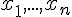 ， 其平均數 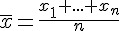 會趨近於常態分布 N(mean, sd/n) 。
換句話說，也就是 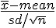 會趨近於標準常態分布 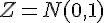 。
有了這樣的定理當基礎，我們就可以進行估計了！但在這之前，我們必須先理解一個關念，那就是信賴區間。
信賴區間
對於一個機率分布 X 而言，假如其機率密度函數為 P(x)，那麼該機率分布在 L1 ≤ x ≤ L2 這個區域之間的機率總和，可以寫成如下算式：
| 分布類型 | P(L1 ≤ x ≤ L2) |
|---|---|
| 離散情況 | 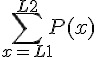 |
| 連續情況 | 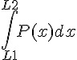 |
由於是機率分布，所以上述算式的總和必然介於 0 到 1 之間，假如我們稱該總和為 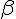 ，那麼該區間就是一個機率值為 的信賴區間。
補充：我們經常將該 寫為 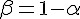 ，然後稱該區間為 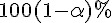 的信賴區間。
為了瞭解信賴區間的慨念，先讓我們看看常態分配 (Normal) 與均等分配 (Uniform) 等兩個機率分布的圖形：

標準常態分配的圖形 N(mean=0, sd=1)

標準均等分配圖形 U(min=0, max=1)
接著讓我們先用均等分配為例，說明信賴區間的概念。舉例而言，假如對於一個介於 0 到 10 之間的均等分布而言， 由於每個點的機率密度函數為 1/10，因此介於 (1, 9) 之間的機率將會是 0.8，也就是 80%。 因此 (1, 9) 是該機率母體的 80% 信賴區間，以下是我們用 R 軟體反應這個信賴區間的操作過程。
> L2=punif(9, min=0, max=10)
> L2
[1] 0.9
> L1=punif(1, min=0, max=10)
> L1
[1] 0.1
> L2-L1
[1] 0.8常態分布的信賴區間
根據中央極限定理，在樣本數夠多 (通常 > 20) 的情況之下，平均值 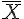 會趨近於常態分布， 因此常態分布的信賴區間對估計 相當重要，所以我們接下來要看看常態分布的信賴區間。
假如您已經知道某母體為常態分布，而且期望值 (平均值) 為 mean ，標準差為 sd ， 那麼當您用該母體來產生樣本，有多少的樣本會落在範圍 (L1, L2) 之外呢？
上述問題感覺數學符號多了一點，讓我們用實際的數字來進一步說明。
假如母體為標準常態分布 Z=N(0, 1) ，那麼請問產生的樣本落在 (-2, 2) 之外的會有多少呢？
這個問題讓我們用 R 軟體來實際操做看看。
> L2=pnorm(2, mean=0, sd=1)
> L1=pnorm(-2, mean=0, sd=1)
> L1
[1] 0.02275013
> L2
[1] 0.9772499
> L2-L1
[1] 0.9544997
> 1.0-(L2-L1)
[1] 0.04550026以上的操作告訴我們，標準常態分布 Z 的樣本落在 (-2, 2) 之內的機率約為 0.9544997，因此落在範圍外的機率為 0.04550026。
那麼，假如不是標準常態分布，那又如何呢？其實只要知道平均值 mean 與標準差為 sd ，就可以輕易的用 R 軟體算出來。 舉例而言，假如某母體為常態分布 N(mean=5, sd=3) ，那麼若我們想知道其樣本落在 (3, 6) 之間的機率有多少，就可以用 下列操作計算出來。
> L2=pnorm(6, mean=5, sd=3)
> L1=pnorm(3, mean=5, sd=3)
> L1
[1] 0.2524925
> L2
[1] 0.6305587
> L2-L1
[1] 0.3780661根據上述操作，我們知道樣本落在 (3, 6) 之間的機率為 0.3780661。
當然、如果我們真的去用 N(mean=5, sd=3) 的隨機函數產生樣本，其統計值並不一定會那麼的準，但是樣本越多的話， 統計值就會越準，請看下列操作。
操作：產生 10 個樣本的情況
> x=rnorm(10, mean=5, sd=3)
> x
[1] 6.387168 7.292018 4.680202 2.225559 11.208245 7.040107 2.739477
[8] 2.316105 4.482658 4.913032
> 3<x
[1] TRUE TRUE TRUE FALSE TRUE TRUE FALSE FALSE TRUE TRUE
> x<6
[1] FALSE FALSE TRUE TRUE FALSE FALSE TRUE TRUE TRUE TRUE
> 3<x & x<6
[1] FALSE FALSE TRUE FALSE FALSE FALSE FALSE FALSE TRUE TRUE
> sum(3<x & x<6)
[1] 3
> sum(3<x & x<6)/10
[1] 0.3操作：產生 100 個樣本的情況
> x=rnorm(100, mean=5, sd=3)
> sum(3<x & x<6)
[1] 34
> sum(3<x & x<6)/100
[1] 0.34操作：產生 100000 個樣本的情況
> x=rnorm(100000, mean=5, sd=3)
> sum(3<x & x<6)
[1] 37865
> sum(3<x & x<6)/100000
[1] 0.37865以上的操作大致反映出了「大數法則」，樣本越多就會越接近母體的分布。
但是，如果我們先給定要求的機率，而不是先給定區間，那麼要如何找出符合該機率的區間呢？
舉例而言，假如我們想知道常態分布 N(mean=5, sd=3) 的 98% 信賴區間，那麼應該怎麼作呢？以下是我們的操作。
> L1=qnorm(0.01, mean=5, sd=3)
> L1
[1] -1.979044
> L2=qnorm(0.99, mean=5, sd=3)
> L2
[1] 11.97904
> P1=pnorm(L1, mean=5, sd=3)
> P1
[1] 0.01
> P2=pnorm(L2, mean=5, sd=3)
> P2
[1] 0.99
> P2在上述操作中，我們先將 (100-98)% = 2% ，平均分配到常態分配的兩端，然後透過 qnorm(0.01, mean=5, sd=3) 找出下界 L1，接著透過 L2=qnorm(0.99, mean=5, sd=3) 找出上界 L2，如此就找出了該常態分布的 98% 信賴區間，為 (L1=-1.979044, L2=11.97904)。
為了驗證這個答案是正確的，我們再度用 P1=pnorm(L1, mean=5, sd=3) 找出 L1 之前的累積機率，發現確實是 0.01 (也就是 1%)， 而 L2 之前的累積機率是 0.99 (99%)，因此該區間的機率就是 P2 - P1 = 0.99-0.01 = 0.98。
接著，我們可以利用該母體產生很多樣本，以驗證看看這些樣本落於信賴區間內的機率是否符合 98% 的條件，以下是對應的 R 軟體操作。
> x = rnorm(100000, mean=5, sd=3)
> p = sum(L1<x & x<L2)/100000
> p
[1] 0.98012在上述操作中，您可以看到當我們產生十萬個樣本時，這些樣本落在信賴區間內的機率為 0.9812，相當接近 0.98 這個預期值，這用實驗 驗證了上述信賴區間的機率應該是對的。
平均值的信賴區間
按照上述的方法，若我們知道母體為何，那麼就很容易找出一個信賴區間符合特定的機率要求，但是在統計的情況之下，我們往往不知道 母體為何？
如果我們知道母體是 N(mean=5, sd=3)，那麼我們根本不需要計算平均數，因為 mean=5 就告訴了你母體的平均數是 5。
但是當我們不知道母體平均數的時候，如何用樣本 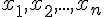 去推測 (或說猜測) 母體的平均數 mean 呢？
這個情況有點像下述的 R 程式，讓我們看看以下操作：
> x = rnorm(25, mean=mu, sd=2)
> x
[1] 10.829923 7.786320 6.975080 6.980363 8.999509 7.343410 5.928051 9.158911
[9] 10.116548 7.042043 8.434972 10.530158 7.258413 8.990531 8.484475 9.104462
[17] 1.223568 7.011966 6.405762 4.449411 11.465473 7.382751 10.305355 10.201814
[25] 11.802796
> mean(x)
[1] 8.168483
> sd(x)
[1] 2.332146
> 在上述操作中，我們知道標準差 sd=2，但是不知道平均數 mean=mu 中的 mu 是多少，不過我們可以觀察到 25 個 樣本序列  的值，而且可以計算出這些樣本的平均值 mean(x) = 8.168483 與樣本變異數 sd(x) = 2.332145。
的值，而且可以計算出這些樣本的平均值 mean(x) = 8.168483 與樣本變異數 sd(x) = 2.332145。
問題是，母體的平均值 mean 到底是多少呢？
這時我們必需要猜測 (或說推測)！
一個最簡單的推測是，我們認為 mean(x) 的值 8.168483 來取代母體的 mean ，也就是直接認為「樣本的平均值 = 母體的平均值」， 這種推測方法雖然很簡單，但是卻通常不錯。
這種以單一數值推測母體參數的方法，稱為「點估計」。
但是「點估計」太過武斷，事實上筆者用來產生上述樣本時，所設定的 mu 值為 8.0，而不是 8.168483 (不過您可以看到其實蠻接近的)。
如果我們將「估計的方法」改變一下，不要硬用一個點套上去，而是改去推測 mu 的可能範圍，那麼這種估計方法就會變化為「區間估計」。
以下是一個進行區間估計的 R 程式，適用範圍是在母體變異數 sd 的情況之下。
mean.range = function(x, alpha=0.05, sd) {
n = length(x) # n = 樣本數
mx = mean(x) # mx 即為平均值 mu 的點估計
r1 = qnorm(alpha/2) # 信賴區間，下半截掉 alpha/2
r2 = qnorm(1-alpha/2) # 信賴區間，上半截掉 alpha/2
L1 = mx-r2*sd/sqrt(n) # 信賴區間下限
L2 = mx-r1*sd/sqrt(n) # 信賴區間上限
range = c(L1, mx, L2) # 信賴區間
}於是我們可以用這個程式去進行區間估計，得到下列操作結果。
> mean.range = function(x, alpha=0.05, sd) {
+ n = length(x) # n = 樣本數
+ mx = mean(x) # mx 即為平均值 mu 的點估計
+ r1 = qnorm(alpha/2) # 信賴區間，下半截掉 alpha/2
+ r2 = qnorm(1-alpha/2) # 信賴區間，上半截掉 alpha/2
+ L1 = mx-r2*sd/sqrt(n) # 信賴區間下限
+ L2 = mx-r1*sd/sqrt(n) # 信賴區間上限
+ range = c(L1, mx, L2) # 信賴區間
+ }
> mean.range(x, sd=2)
> R = mean.range(x, sd=2)
> R
[1] 7.384497 8.168483 8.952468上述操作代表根據樣本 x 所推估的 95% 的信賴區間 ( alpha=0.05, 1-alpha=0.95) 為 (7.384497, 8.952468)， 而樣本的平均值 mean(x) 為 8.168483。
現在我們已經學會的信賴區間估計的方法，但是卻還有一個缺憾！
通常我們除了不知道母體的平均值 mu 之外，我們也不會知道母體的標準差 sd ，因此上述的推估程式其實沒有太大的實用價值！
(這也是為何 R 軟體預設的套建沒有納入這類函數的原因之一)。
當母體標準差 sd 未知的時候，我們就無法用常態分布來進行推估了，而必需要用一種稱為 T 分配的分布，來推估母體平均值 mean 的範圍， 因此，讓我們些看看 T 分布到底長得什麼樣？
其實 T 分布與常態分布非常接近，只是考慮到樣本數量 (自由度+1) 的影響力，因此稍微矮了一點點而已，我們可以從以下的操作與圖形 當中看到 T 分布與常態分布之間的差異。
> curve(dnorm, from=-3, to=3, col="black")
> curve(dt(x, df=25), from=-3, to=3, add=T, ylab="T25", col="blue")
> curve(dt(x, df=10), from=-3, to=3, add=T, ylab="T10", col="red")
> curve(dt(x, df=3), from=-3, to=3, add=T, ylab="T3", col="green")
> 
常態分布與 T 分布 (自由度=3, 10, 25，也就是樣本數為 4, 11, 26 的情況)
有了 T 分布，我們就可以用來檢定 sd 未知情況下的平均數了，以下是我們的操作過程。
> t.test(x)
One Sample t-test
data: x
t = 17.5128, df = 24, p-value = 3.562e-15
alternative hypothesis: true mean is not equal to 0
95 percent confidence interval:
7.205820 9.131145
sample estimates:
mean of x
8.168483 上述操作中，我們用 T 分配來推估母體的平均值範圍，程式的輸出顯示其 95% 信賴區間是 (7.205820, 9.131145)。
事實上、t.test 所作的並不只是「估計信賴區間」而已，而是具有「檢定」某個假設可能程度的功能，因此才稱為 test。
在上述檢定中，我們檢定的「對立假設」(alternative hypothesis) 是 mu≠0 (true mean is not equal to 0) ，也就是 「虛無假設」是 mu=0 ，結果顯示虛無假設成立的「顯著性」只有 3.562e-15 ( 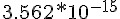 ) ，可以說是幾乎不可能。
這個結果是合理的，因為我們用來產生樣本的母體其實是 N(mean=8, sd=2) ，距離 0 實在太遠了。
如果我們將 mu 改設為 8 重新進行一次檢定，您將會看到檢定結果如下：
> t.test(x, mu=8)
One Sample t-test
data: x
t = 0.3612, df = 24, p-value = 0.7211
alternative hypothesis: true mean is not equal to 8
95 percent confidence interval:
7.205820 9.131145
sample estimates:
mean of x
8.168483 在採用 mu=8 所進行的檢定當中，我們看到「顯著性」變成了 p-value = 0.7211，這比起 mu=0 的 p-value = 3.562e-15 大太多了， 代表 mu=8 是有可能的，我們無法否決這樣的可能性。
另外、輸出報告中也顯示了自由度 df = 24，T 分布中所謂的自由度其實是樣本數減一 (25-1=24)。
補充
想必讀到這裡，一定有人在想：「我又沒有學過機率統計」(或者學過也可能忘光了)，搞不清楚你說的「對立假設」、「虛無假設」、 「顯著性」是甚麼東西，讓我們補充如下：
根據某些樣本，推論統計可以進行實驗的檢定某個假設 H1 是否可能，其方法是透過否定對立假設 H0，看看 H0 是否不太可能發生。
- H1：稱為研究假設 (research hypothesis) 或對立假設 (alternhative hypothesis)
- H0：稱為虛無假設 (null hypothesis)
透過推論統計，我們可以檢查實驗結果是否具有顯著性 (假設檢定)，也就是實驗的假設 H1 是否要被接受， 由於 H0 是H1 的對立假設 (不是 H0 就是 H1，也就是 H1 = not H0)，因此一旦否決了 H0 就代表接受了 H1。
舉例而言，以上述的 mu = 0 的情況，其虛無假設 H0 與對立假設 H1 分別如下。
- H0: mu=0
- H1: mu≠0
在進行假設檢定的推論時，我們可能推論正確，也可能推論錯誤，以下是四種可能的推論情況。
| 決策 | H0 為真 | H1 為真 |
|---|---|---|
| 拒絕 H0 | 型 I 錯誤 (H0 為真卻拒絕 H0) | 正確決策 |
| 無法拒絕 H0 | 正確決策 | 型 II 錯誤 (H1 為真卻無法拒絕 H0) |
以實例來說，對於 mu=0 的情況，其推論決策如下表所示。
| 決策 | H0:mu=0 為真 | H1:mu≠0 為真 |
|---|---|---|
| 拒絕 mu=0 | 型 I 錯誤 (mu=0 卻被我們拒絕) | 正確決策 |
| 無法拒絕 mu=0 | 正確決策 | 型 II 錯誤 (mu≠0 卻無法拒絕 mu=0) |
當然我們會希望正確決策的機會越大越好，而錯誤決策的機會越小越好。假設檢定可以告訴我們各類型正確與錯誤決策的機率， 以便讓我們知道是否要接受 H1 而拒絕 H0。
在檢定的結果中，我們可以用幾個線索決定是否要拒絕虛無假設 H0，改承認對立假設 H1 ，其根據大致上可以從檢定報告的 兩個部分看出來，第一部分是從「信賴區間」中可以看出，第二部分是從顯著性 P 值當中看出。
在上述兩次的檢定當中，由於 mu=8 位於 95% 信賴區間 (7.205820 9.131145) 之內，因此虛無假設 mu=8 無法被拒絕，也就是 mu=8 是有可能且合理的，但是 mu=0 位於 95% 信賴區間 (7.205820 9.131145) 之外，因此是不太可能，而且應該被拒絕的， 也就是 mu ≠ 0 才是比較合理且可能的。
另外，也可以採用顯著性 (P 值, p-value) 的方式判別，所謂的 P 值就是樣本的不合理性，舉例而言，以上述的 mu=0 的情況， P 值就被定義為 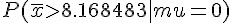 的機率值，由於 mu=0 的分布會產生這麼大的一組平均值的情況非常罕見， 機率只有 3.562e-15 ，因此我們可以很有信心的拒絕 H0:mu=0 這個虛無假設，改採 H1:mu≠0 這個對立假設。
因此在上述兩次檢定中，由於 mu=8 的顯著性 (p-value) 為 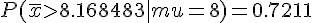 算蠻大的， 所以無法被拒絕，也就是 mu=8 是有可能且合理的。
但是在 mu=0 的檢定中，p-value = 3.562e-15，已經小到不可思議的程度，因此該檢定結果強烈拒絕 mu=0 這樣的假設， 改為支持對立假設 mu ≠ 0 。
參考文獻
- 免費電子書 -- 機率與統計 (使用 R 軟體) -- http://ccckmit.wikidot.com/st:main
- 工程統計學：原則與應用(修訂版)(Milton 4/e), 作者：Milton, 譯者：吳榮彬, 年份：2008年 4版, ISBN：9789861574080
Verilog (1) – 以 Icarus 測試全加器 (作者：陳鍾誠)
在本系列的文章當中，我們將介紹如何用 Verilog 硬體描述語言設計電路，並且採用 Icarus 作為主要開發測試工具。
有了 Verilog 與電路設計的基礎之後，我們就可以在後續的文章中順利的銜接「開放電腦計畫」 的 CPU 設計這類的主題！
Verilog 簡介
Verilog 與 VHDL 都是用來設計數位電路的硬體描述語言，但 VHDL 在1983年被提出後，1987 年被美國國防部和IEEE確定為標準的硬體描述語言。
Verilog 是由 Gateway Design Automation 公司於 1984 年開始發展的， Cadence Design Systems 公司於 1990 年購併了 Gateway 公司，Cadence 隨後將 Verilog 提交到 Open Verilog International 成為開放公用標準，1995 年 Verilog 被 IEEE 認可成為 IEEE 1364-1995 標準，簡稱為 Verilog-95。此一標準於 2001 年更新後成為 Verilog-2001。
相較於 VHDL 而言，Verilog 的語法較為簡潔，因此經常被專業的數位電路設計者採用，而 VHDL 的使用族群則有較多的初學者。當我們想學習數位電路設計時，經常會難以選擇要用哪一種語言，因為 VHDL 的書籍與教材似乎 比 Verilog 多一些，但是 Verilog 的高階設計電路（像是開放原始碼 CPU 等）則比 VHDL 多很多。
筆者是為了要設計 CPU 而學習數位電路設計的，因此決定學習 Verilog 語言，而非 VHDL 語言。雖然筆者也學過 VHDL 語言，但後來發現 Verilog 相當好，相對而言語法簡潔了許多，因此筆者比較偏好 Verilog 語言。
Icarus : 開放原始碼的 Verilog 編譯執行工具
Icarus 是由 Stephen Williams 所設計的 Verilog 開發工具，採用 GPL 授權協議，並且可以在 Linux, BSD, OS X, MS Windows 等環境下執行。
Icarus 支援 Verilog 的 IEEE 1995、IEEE 2001 和 IEEE 2005 三種標準語法，也支援部分的 SystemVerilog 語法，其官方網站網址如下：
如果您是 MS Windows 的使用者，可以從以下網址中下載 Icarus 的 MS Windows 版本，其安裝非常容易：
全加器的範例
傳統的數位邏輯課程當中，我們通常會用「邏輯閘」的組合方式，來設計出所要的電路，以下我們就用「全加器」當範例， 說明如何用「閘級」的語法，在 Verilog 當中設計數位電路。
全加器總共有 3 個輸入 (a, b, c_in)，兩個輸出值 (sum, c_out)，其真值表如下所示：
| a | b | c_in | c_out | sum |
|---|---|---|---|---|
| 0 | 0 | 0 | 0 | 0 |
| 0 | 0 | 1 | 0 | 1 |
| 0 | 1 | 0 | 0 | 1 |
| 0 | 1 | 1 | 1 | 0 |
| 1 | 0 | 0 | 0 | 1 |
| 1 | 0 | 1 | 1 | 0 |
| 1 | 1 | 0 | 1 | 0 |
| 1 | 1 | 1 | 1 | 1 |
根據這個真值表，我們可以用卡諾圖得到化簡後的電路 (但必須注意的是，卡諾圖化簡出來的電路只有 AND, OR, NOT，沒有 XOR)， 然後根據化簡後的算式繪製電路圖。(在此範例中，c_out 可以採用卡諾圖化簡出來，但 sum 使用的並非化簡的結果，而是以經驗 得到的 XOR 組合式)
當您完成邏輯運算式設計之後，就可以用 TinyCAD 這個軟體，繪製出全加器的電路如下圖所示：

用 TinyCAD 繪製的全加器電路圖
接著我們可以按照以上的線路，根據 Verilog 的語法，設計出對應元件與測試程式如下所示：
程式：fulladder.v
// 以下為全加器模組的定義
module fulladder (input a, b, c_in, output sum, c_out);
wire s1, c1, c2;
xor g1(s1, a, b);
xor g2(sum, s1, c_in);
and g3(c1, a,b);
and g4(c2, s1, c_in) ;
or g5(c_out, c2, c1) ;
endmodule
// 以下為測試程式
module main;
reg a, b, c_in;
wire sum, c_out;
fulladder fa1(a, b, c_in, sum, c_out);
initial begin
a = 0; b = 0; c_in = 0;
$monitor("%04dns monitor: a=%d b=%d c_in=%d c_out=%d sum=%d", $stime, a, b, c_in, c_out, sum);
#1000 $finish;
end
always #50 c_in = c_in+1;
always #100 b = b+1;
always #200 a = a+1;
endmodule然後我們就可以利用 Icarus 進行編譯與測試，看看 fulladder.v 的模擬執行結果是否正確。
執行結果：
D:\Dropbox\Public\pmag\201306\code>vvp fulladder
0000ns monitor: a=0 b=0 c_in=0 c_out=0 sum=0
0050ns monitor: a=0 b=0 c_in=1 c_out=0 sum=1
0100ns monitor: a=0 b=1 c_in=0 c_out=0 sum=1
0150ns monitor: a=0 b=1 c_in=1 c_out=1 sum=0
0200ns monitor: a=1 b=0 c_in=0 c_out=0 sum=1
0250ns monitor: a=1 b=0 c_in=1 c_out=1 sum=0
0300ns monitor: a=1 b=1 c_in=0 c_out=1 sum=0
0350ns monitor: a=1 b=1 c_in=1 c_out=1 sum=1
0400ns monitor: a=0 b=0 c_in=0 c_out=0 sum=0
0450ns monitor: a=0 b=0 c_in=1 c_out=0 sum=1
0500ns monitor: a=0 b=1 c_in=0 c_out=0 sum=1
0550ns monitor: a=0 b=1 c_in=1 c_out=1 sum=0
0600ns monitor: a=1 b=0 c_in=0 c_out=0 sum=1
0650ns monitor: a=1 b=0 c_in=1 c_out=1 sum=0
0700ns monitor: a=1 b=1 c_in=0 c_out=1 sum=0
0750ns monitor: a=1 b=1 c_in=1 c_out=1 sum=1
0800ns monitor: a=0 b=0 c_in=0 c_out=0 sum=0
0850ns monitor: a=0 b=0 c_in=1 c_out=0 sum=1
0900ns monitor: a=0 b=1 c_in=0 c_out=0 sum=1
0950ns monitor: a=0 b=1 c_in=1 c_out=1 sum=0
1000ns monitor: a=1 b=0 c_in=0 c_out=0 sum=1結語
仔細觀察上述輸出結果，您會發現這個結果與真值表的內容完全一致，因此驗證了該設計的正確性！
透過這種方式，您就可以用 Verilog 設計電路的程式，然後用 Icarus 編譯並驗證電路是否正確。
在下期當中，我們將逐步開始深入介紹 Verilog 程式的語法，看看「硬體設計」與「軟體設計」語言有何不同之處，我們下期見！
參考文獻
雜誌訊息
讀者訂閱
程式人雜誌是一個結合「開放原始碼與公益捐款活動」的雜誌，簡稱「開放公益雜誌」。開放公益雜誌本著「讀書做善事、寫書做公益」的精神，我們非常歡迎程式人認養專欄、或者捐出您的網誌，如果您願意成為本雜誌的專欄作家，請加入 程式人雜誌社團 一同共襄盛舉。
我們透過發行這本雜誌，希望讓大家可以讀到想讀的書，學到想學的技術，同時也讓寫作的朋友的作品能產生良好價值 – 那就是讓讀者根據雜誌的價值捐款給慈善團體。 讀雜誌做公益也不需要有壓力，您不需要每讀一本就急著去捐款，您可以讀了十本再捐，或者使用固定的月捐款方式，當成是雜誌訂閱費，或者是季捐款、一年捐一次等都 OK ! 甚至是單純當個讀者我們也都很歡迎！ 本雜誌每期參考價：NT 50 元，如果您喜歡本雜誌，請將書款捐贈公益團體。例如可捐贈給「羅慧夫顱顏基金會 彰化銀行(009) 帳號：5234-01-41778-800」。(若匯款要加註可用「程式人雜誌」五個字)
想訂閱本雜誌的讀者，請按 雜誌訂閱 連結並填寫表單，我們會在每一期雜誌出刊時寄送通知與下載網址到您的信箱。
投稿須知
給專欄寫作者： 做公益不需要有壓力。如果您願意撰寫專欄，您可以輕鬆的寫，如果當月的稿件出不來，我們會安排其他稿件上場。
給網誌捐贈者： 如果您沒時間寫專欄或投稿，沒關係，只要將您的網誌以創作共用的 姓名標示、非商業性、相同方式分享 授權 並通知我們，我們會自動從中選取需要的文章進行編輯，放入適當的雜誌當中出刊。
給文章投稿者： 程式人雜誌非常歡迎您加入作者的行列，如果您想撰寫任何文章或投稿，請用 markdown 或 LibreOffice 編輯好您的稿件，並於每個月 25 日前投稿到程式人雜誌社團 的檔案區，我們會盡可能將稿件編入隔月1號出版程式人雜誌當中，也歡迎您到社團中與我們一同討論。
如果您要投稿給程式人雜誌，我們最希望的格式是採用 markdown 的格式撰寫，然後將所有檔按壓縮為 zip 上傳到社團檔案區給我們， 如您想學習 markdown 的撰寫出版方式，可以參考 看影片學 markdown 編輯出版流程 一文。
如果您無法採用 markdown 的方式撰寫，也可以直接給我們您的稿件，像是 MS. Word 的 doc 檔或 LibreOffice 的 odt 檔都可以，我們 會將這些稿件改寫為 markdown 之後編入雜誌當中。
參與編輯
您也可以擔任程式人雜誌的編輯，甚至創造一個全新的公益雜誌，我們誠摯的邀請您加入「開放公益出版」的行列，如果您想擔任編輯或創造新雜誌，也歡迎到 程式人雜誌社團 來與我們討論相關事宜。
公益資訊
| 公益團體 | 聯絡資訊 | 服務對象 | 捐款帳號 |
|---|---|---|---|
| 財團法人羅慧夫顱顏基金會 | http://www.nncf.org/ 02-27190408分機 232 |
顱顏患者 (如唇顎裂、小耳症或其他罕見顱顏缺陷） | 銀行：009彰化銀行民生分行 帳號：5234-01-41778-800 |
| 社團法人台灣省兒童少年成長協會 | http://www.cyga.org/ 04-23058005 |
單親、隔代教養.弱勢及一般家庭之兒童青少年 | 銀行：新光銀行 戶名：台灣省兒童少年成長協會 帳號：103-0912-10-000212-0 |